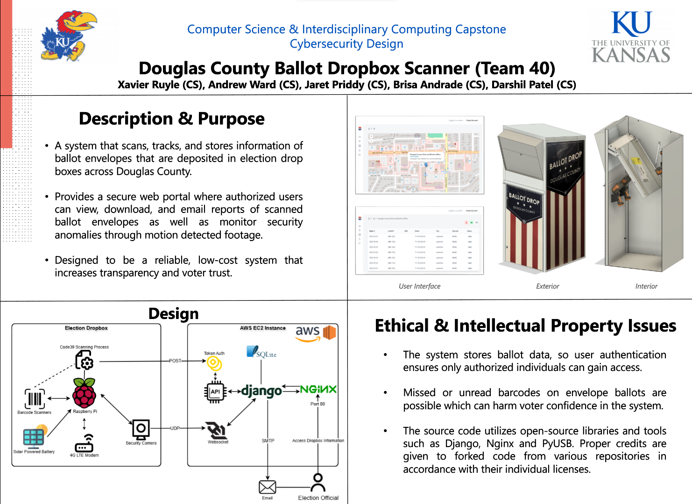
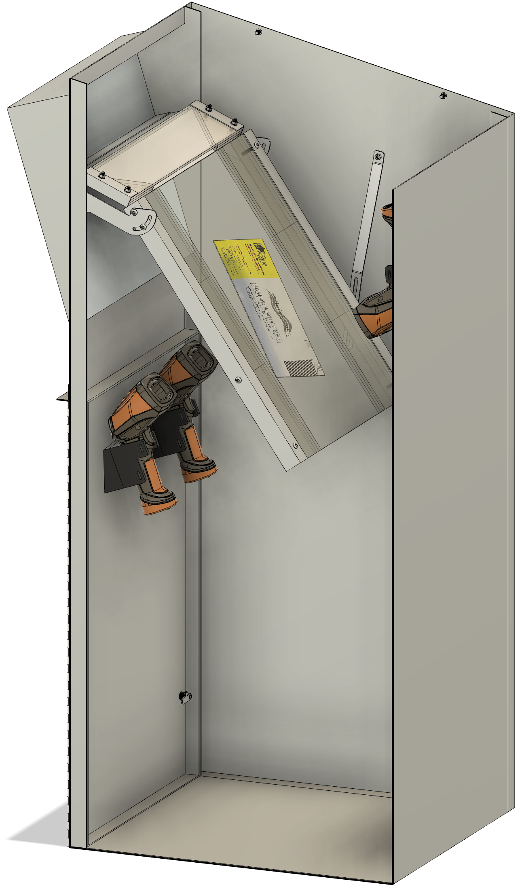
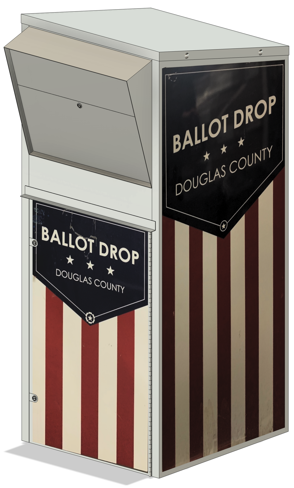
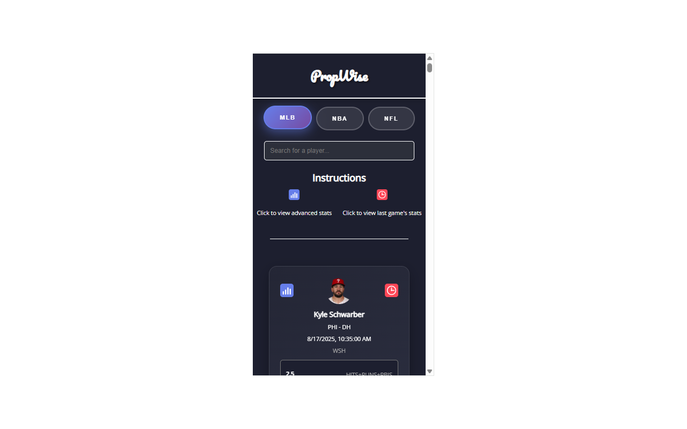
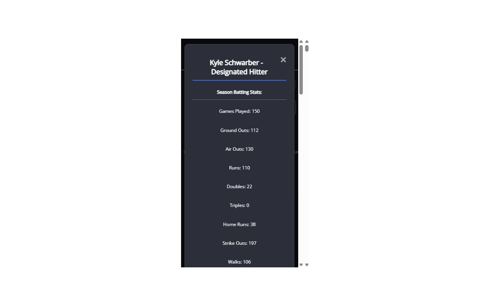

Projects
Automated E-Filing System
Jun 2023
Full-stack automation system that reduced manual court filing from 40+ hours per week to ~4 hours, processing 600+ cases daily with automated reporting and email notifications.
Python
Selenium
GUI Development
Automation
Ballot Drop-Box Scanner
Jan 2025




Government-funded Douglas County Ballot Drop-Box Scanner on Raspberry Pi 5, integrating USB barcode scanning into a Django web portal with secure login.
Raspberry Pi 5
Django
AWS EC2
Nginx
PropWise Chrome Extension
Sep 2024


Chrome extension to fetch and display real-time NBA player stats from PrizePicks and NBA Stats API with intuitive popup UI.
JavaScript
Chrome Extension
NBA API
Real-time Data
View on Chrome Web Store